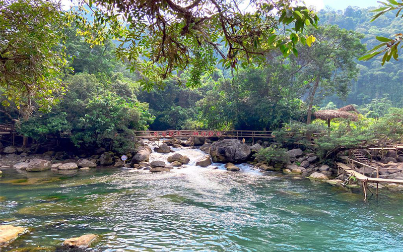
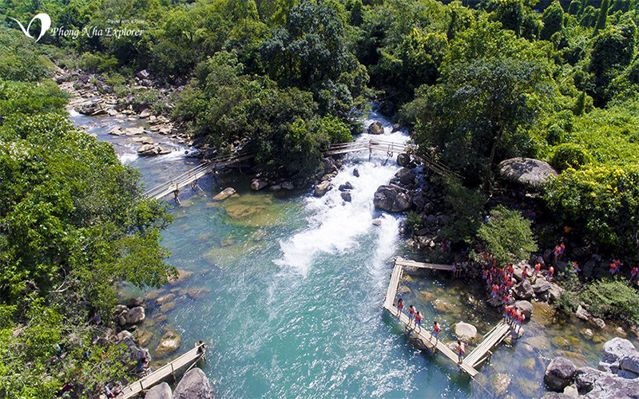
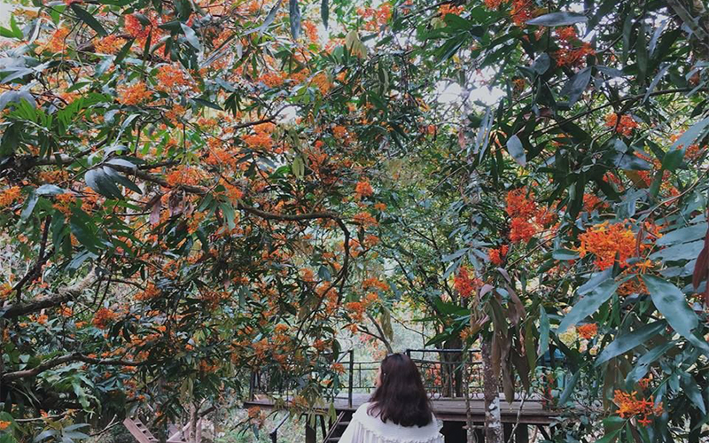
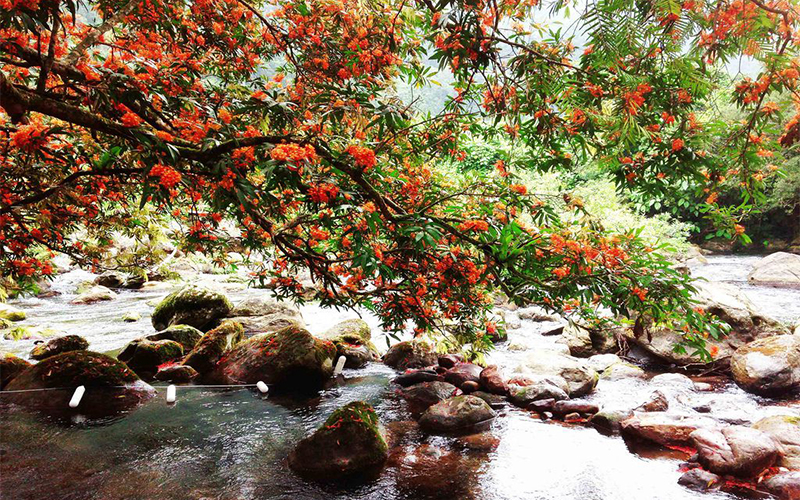
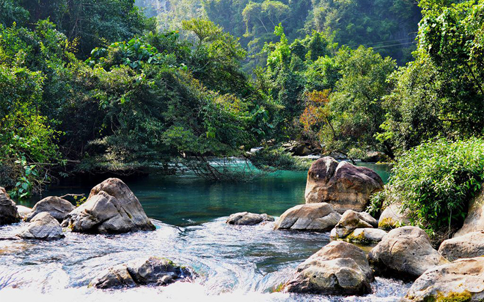
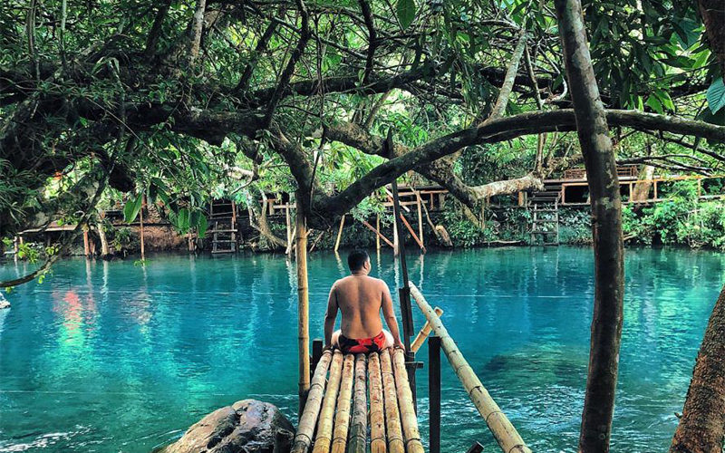
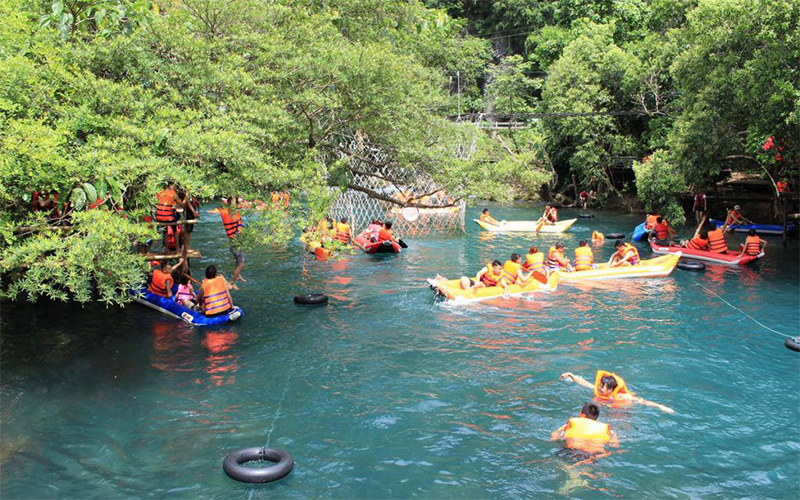

ĐẾN SUỐI NƯỚC MOỌC TẬN HƯỞNG NHỮNG PHÚT GIÂY THƯ GIÃN TUYỆT VỜI !
Tận hưởng không khí trong lành của núi rừng hoang sơ và có những giây phút thư giản tuyệt vời khi đắm mình trong dòng nước trong xanh mát lạnh của Suối nước Moọc. Cái nóng oi ả của những ngày hè dường như tan biến, dòng nước suối trong xanh và nhiệt độ luôn dưới 20 độ C.
Ẩn dưới tán rừng già âm u, rậm rạp phủ kín trong vườn quốc gia Phong Nha Kẻ Bàng xung quanh là những vách núi đá vôi cao vút, suối Nước Moọc như một viên ngọc bích trong vắt đầy bí ẩn mang đến hơi gió mát lành cho mảnh đất Quảng Bình giữa cái nắng oi bức của mùa hè với những cơn gió Lào đặc trưng.
Ấn tượng đầu tiên khi bạn tới đây là nơi này thật lạ, nằm sát đường Hồ Chí Minh nhánh tây, giữa đất miền Trung bỏng cháy gió Lào, vậy mà chỉ đi vài chục bước chân là không khí đã thay đổi hẳn. Không chỉ dưới tán rừng rậm che bóng mát, ngay cả khi đứng trên những tảng đá lớn giữa suối, nắng vẫn chói chang trên đầu, gió vẫn ràn rạt thổi sau lưng, nhưng vẫn rất mát mẻ dễ chịu, như thể vừa lạc vào một miền đất khác.
Đặc biệt cứ mỗi độ giữa tháng 3 đến cuối tháng 4, Suối Nước Moọc lại được tô điểm bằng sắc vàng của hoa Vàng Anh tươi thắm. Du khách đến đây vào thời điểm này sẽ không khỏi ngỡ ngàng, say đắm trước vẻ đẹp nên thơ của những chùm hoa Vàng Anh mang sắc vàng rực rỡ.
Loài hoa được gọi với cái tên vô cùng độc đáo là Vô ưu, nghĩa là không ưu tư phiền muộn, nghĩ đến hoa là nghĩ đến sự giải thoát hết mọi sự vẩn đục, vấn vương… của trần gian. Vì vậy, nó cũng được coi là loài hoa biểu trưng cho Phật giáo. Màu xanh ngọc bích của Suối Moọc đang in hình, soi bóng những chùm hoa Vàng Anh, uốn lượn chảy vào trong thung lũng tạo nên khung cảnh tuyệt diệu.
Nước Mọoc mới đầu nghe ai cũng tò mò. Theo tiếng địa phương ở đây “mọoc” có nghĩa là “mọc” tức là mọc từ dưới lên. Và cái tên gọi đã phô ra một điều kỳ diệu tại điểm du lịch này. Tại đầu nguồn nước, mọi người sẽ được chiêm ngưỡng sự kỳ lạ của dòng suối với những cột nước thấp đang mọc lên ùn ùn từ lòng đất và tuôn chảy thành dòng suối Nước Moọc để hòa vào dòng sông Chày xanh ngắt. Theo các chuyên gia tham hiểm Hoàng gia Anh sau khi tiến hành khảo sát hiện tượng độc đáo của hồ nước Mọoc này cho biết hồ rộng khoảng 90 m2.
Đoàn khảo sát cho biết thêm hiện tượng nước mọc lên từ lòng đất ở đây rất đặc biệt mà họ vẫn chưa thể giải thích được. Độ sâu của hồ vẫn còn là bí ẩn thách thức sự khám phá tìm hiểu của con người. Đầu nguồn con suối là vách núi dựng đứng, nước cứ thế phun lên từ lòng đất, các nhà nghiên cứu địa chất cho rằng dòng suối này có thể bắt nguồn từ những mạch ngầm trong các vách núi sừng sững kia. Điểm phun chính là nơi lộ thiên và cũng là khởi thủy của suối Moọc.

Suối ở đây xanh quanh năm, vào giữa những ngày hè nắng to nước ở đây càng trong xanh một cách kỳ lạ! Giữa bốn bề vách núi cao vút và tán rừng rậm rạp hiện ra một vùng nước rộng phẳng lặng như một mặt gương khổng lồ biếc xanh màu ngọc bích và nhiệt độ luôn dưới 20 độ C. Bị màu xanh đẹp đến nao lòng ấy mê hoặc, chẳng ai có thể cưỡng lại ước muốn được lao xuống đắm mình trong dòng nước mát thăm thẳm không đáy.
Không có gì bằng khi du khách được mắc võng nằm đu đưa dưới tán cây rừng, nghe suối nước chảy bên mình và có thể tắm mát nô đùa ,câu cá hay chèo thuyền dưới dòng suối Nước Moọc trong vắt lô nhô đầy những tảng đá to nhỏ. Dưới những tán cây rừng nguyên sinh, chỉ có tiếng chim hót, tiếng suối chảy và những làn gió mát sẽ mang lại cho Du khách cảm giác thật sự thư giản và dễ chịu.
Những ngày hè oi ả trên vùng đất Quảng Bình, suối nước Moọc không lúc nào ngớt tiếng cười, tiếng nô đùa càng làm cho suối Moọc gần gũi, hấp dẫn hơn với những du khách một lần qua đây. Khu du lịch sinh thái suối Moọc thật sự không giống các điểm du lịch khác ở Vườn Quốc gia Phong Nha Kẻ Bàng, nơi đây vẫn giữ được vẻ hoang sơ và tinh khôi vốn có, thật sự hấp dẫn và gây nhiều bất ngờ ấn tượng với du khách.
Suối Moọc ở đâu?
Suối Nước Moọc cách thành phố Đồng Hới khoảng tầm 60 km, đi theo đường Hồ Chí Minh về phía Bắc sẽ có một ngã ba gọi là Khe Gát gặp biển chỉ dẫn, sau đó cứ đi theo hướng biển chỉ dẫn là đến Suối nước Moọc